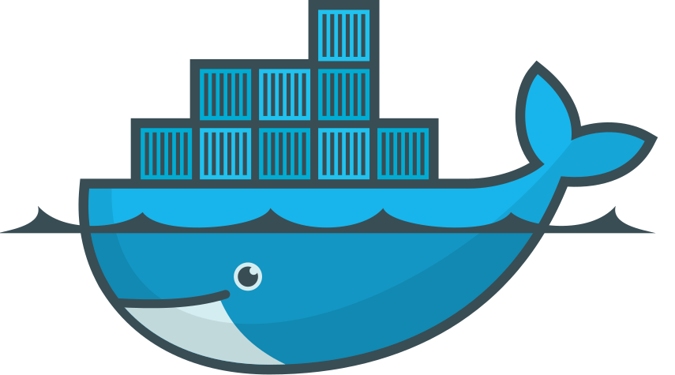

Carolyn Van Slyck
namespaces + cgroups = ISOLATION
The Matrix is everywhere. It is all around us. Even now, in this very room. You can see it when you look out your window or when you turn on your television. You can feel it when you go to work... when you go to church... when you pay your taxes. It is the world that has been pulled over your eyes to blind you from the truth...
That you are a slave, Neo. Like everyone else you were born into bondage. Into a prison that you cannot taste or see or touch. A prison for your mind.
linux container + packaging + tools
docker run -d -v `pwd`:/var/www nginx
Moves knowledge on how to run your app out of a readme and into code
| VMs | Docker | Chef | |
|---|---|---|---|
| Isolated | ✅ | ✅ | ❌ |
| Repeatable | ✅ | ✅ | ✅ |
| Sharable | ✅ | ✅ | ✅ |
| Maintainable | ❌ | ❌ | ✅ |
Dockerfile
FROM ubuntu
RUN apt-get install -y python
COPY myapp /myapp
CMD ["python", "/myapp/run.py"]
docker build -t carolynvs/myapp .docker push carolynvs/myappdocker run -d carolynvs/myapp